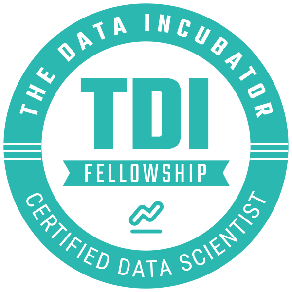

Shen Lu
slu2012@outlook.com
Education:
- University of South Florida, Computer Science. Ph. D, 2016-2020
- University of South Florida, MUMA Business School. MBA, 2018-2020
- Tsinghua University, Computer Science. B.S, 2002
- Tsinghua University, Computer Science. M.S, 2005
Certificates:
- Data Science Fellow, The Data Incubaot, 2020
- Google Analytics for Beginners, 2017
- Advanced Google Analytics, 2017
- MIT Big Data and Social Behavior, 2018
Skills:
- Programming Languages: Python, R, Java, C, VBA, SQL
- Database: Oracle, Microsoft SQL Server, MySQL, Postgres
- Information System: SAP, ArcGIS, Google Analytics
- Data Analysis: Machine Learning, Data Modeling, Data Quality Control, Data Visualization
- Expertise: Text Mining, Image Processing, Social Network Analysis
Professional Work:
- Employer: National Center for Toxicological Research, January, 2006-December, 2015
- Employer: Soft Challenge LLC, Tampa, Florida, February, 2012-now
Internship Work:
TCM Bank LLC, February, 2020 – April, 2020
- credit risk modeling and analysis.
- operational risk modeling and analysis,
- market risk modeling and analysis,
- fraud risk modeling and analysis.
- Executive Management Report Automation and Delivery.
Quality Counts LLC, March, 2019- August, 2020
- traffic detection
- travel planning
- congestion detection
- transportation planning
- curve safety analysis
Geographic Solutions, January, 2018 – June, 2019
- population group and interpretation
- Key performance indicator (KPI) definition and evaluation
- located based job market analysis
Awards:
- Best Paper Award, at WMSCI 2016 Conference, for the paper titled “Combining Bayesian and Semantic Analysis with Domain Knowledge”
- Best Paper Award, at WMSCI 2013, for the paper titled “Discovery of Strong Association Rules for Attributes from Data for Program of All-Inclusive Care for the Elderly (PACE)”
- Best Poster Award, at National Science Foundation (NSF) Bioinformatics Workshop to Foster Collaborative Research 2013, for the poster titled “Linkage Discovery with Glossaries and Topic Segmentation”
- Microsoft Innovation Cup Student Software Contest, 1st Place. 2005
- Best Paper Award, at WMSCI 2011 Conference, for the paper titled “Statistical Quality Control of Microarray Gene Expression Data”
- BEA Scholarship, 2005
- Guanghua Scholarship, 2004
- Tsinghua Scholarship, 2003